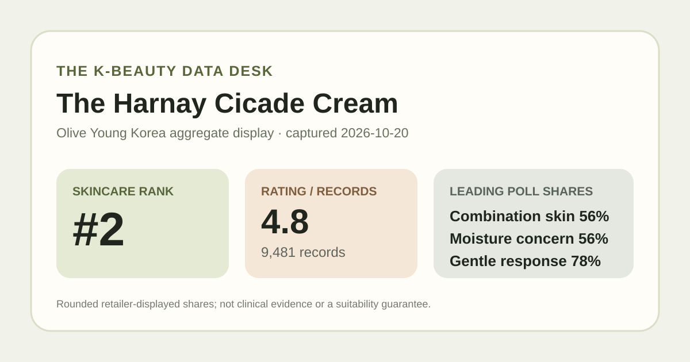
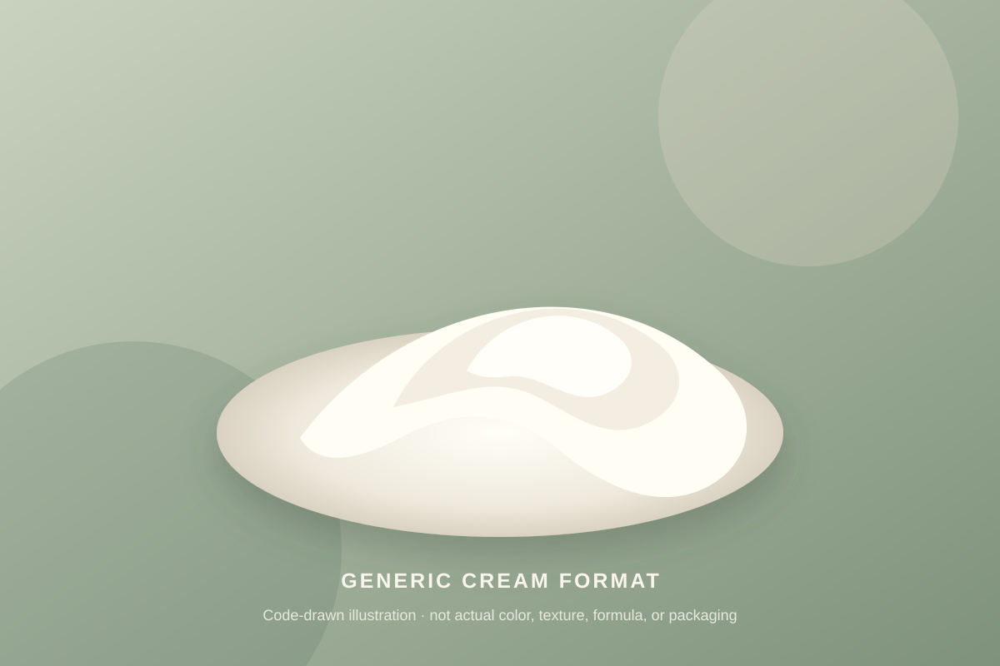

Data captured October 20, 2026. This analysis uses only Olive Young Korea's displayed aggregate rating, star distribution, anonymous shopper polls, and retailer-level automated theme summary. It does not reproduce or translate individual review text, names, or photos.

The short version: The listing showed 4.8 out of 5 from 9,481 review records. The displayed rating split was 87% five-star, 9% four-star, 3% three-star, 1% two-star, and 1% one-star. Combination skin, moisture concern, and the gentle response led their respective shopper polls.
The visible average was 4.8 stars. The product header displayed 9,481 review records, and the detailed review panel repeated the same count. That agreement matters because it avoids combining a current headline score with a different review total from another cream, an older pack, or a neighboring product page.
The detailed panel displayed this rounded star distribution:
The five-star share is the dominant storefront satisfaction signal, and five- plus four-star selections add to 96% as displayed. The five rows add to 101%, however, which is a reminder that Olive Young shows whole-number shares. The values should be read as rounded interface outputs rather than an exact reconstruction of all 9,481 selections.
A high aggregate can help readers identify products with broad retail attention, but it is not a controlled comparison. The interface does not reveal a shared duration of use, application amount, climate, routine, or starting skin condition. It also cannot establish that every record concerns only the exact 100 ml plus 30 ml configuration visible on capture day.
The skin-type poll showed 56% combination, 29% dry, and 15% oily. These displayed shares total 100%. Combination skin is the largest self-reported group, while the dry and oily responses together make up a substantial minority.
This distribution describes who selected each label, not who achieved a measured benefit. Self-reported skin type can change with season, climate, cleansing, medication, other products, or the respondent's own definition. The poll also does not tell us whether the cream was the only routine change. It therefore cannot establish that the product works better for combination skin.
The concern poll displayed 56% moisture, 43% soothing, and 1% wrinkle or brightening concern. These broad questionnaire labels indicate which concern respondents chose. They are not measurements of water content, barrier function, redness, inflammation, wrinkles, or pigmentation.
The retailer title includes a claim translated as one-use barrier improvement. This article treats that wording as part of the captured listing, not as an independently verified result. The page view used here did not provide the study protocol, sample size, comparator, numerical endpoint, measurement timing, or complete applicability limits needed to evaluate that claim. A concern-poll lead cannot supply those missing details.
The irritation poll showed 78% gentle, 21% ordinary, and 1% felt irritation. The gentle response is the clear leader, but it remains a rounded, self-reported storefront signal. It is not a tolerance test and does not rule out stinging, breakouts, allergy, eye-area discomfort, or incompatibility with another step.
The visible 1% irritation response is also important. Even a small displayed share means the aggregate should not be converted into “irritation-free.” Individual response can depend on the current formula, frequency, application area, damaged skin, other leave-on products, and personal history. Directions and precautions should come from the current package and advice appropriate to the individual's circumstances.
Olive Young's automated recent-review summary labeled 90% of its analyzed subset as positive. It grouped discussion into broad themes around makeup adherence, mild-feeling use, and a fresh or light finish. Those themes are useful as navigation cues, but they are generated from a retailer-defined recent subset rather than all 9,481 records.
This article does not reproduce or translate the underlying sentences. It also does not convert the summary into product facts: a theme about makeup layering does not prove the same behavior under every sunscreen or base product, and a mild-feeling theme does not guarantee tolerance. The 90% label is not interchangeable with the overall 4.8 rating or with a buyer-wide success rate.

The retailer places this item in the cream category. In general format terms, a cream is a leave-on emulsion designed to spread as a continuous layer and is often richer than a toner or thin serum. That category description does not reveal this product's exact viscosity, slip, scent, absorption speed, residue, finish, or performance under sunscreen and makeup.
I did not handle or apply this product. The illustration above is deliberately generic and does not reconstruct its actual color or texture. It also should not be read as an ingredient or barrier diagram. Anyone considering the cream should verify the current ingredient list, directions, and precautions on the regional package rather than infer them from a name, an illustration, or a crowd rating.
At capture, the Korean listing showed a ₩29,000 reference price and a ₩19,720 promotional price. The title described 100 ml plus a 30 ml addition. This makes the captured page a promotional configuration rather than a timeless single-unit price reference.
Prices, coupons, gifts, inventory, and selected configurations can change quickly. Before comparing value, verify the current quantity, seller, checkout total, return terms, and whether the extra 30 ml remains part of the offer. Review records can also span older package designs, quantities, or promotions rather than only the exact configuration visible on October 20.
The defensible reading is narrow: this was the first distinct unpublished product after the top listing was excluded for existing coverage; its 9,481-record profile leaned strongly toward high star selections; combination skin led the skin-type poll; moisture led the concern responses; and the gentle answer led the irritation poll. The current promotional page also held the second position in the skincare sales ranking at capture.
Those signals make the listing relevant for readers comparing cream formats and current Korean retail promotions. They do not justify calling it a clinically proven barrier treatment, a guaranteed makeup-prep product, universally gentle, or a certain match for combination skin. A sound next step is to check the current label and regional formula, consider personal tolerance history, and seek professional guidance when a medical skin concern is involved.
Combination skin was the largest displayed skin-type response at 56%, followed by dry skin at 29% and oily skin at 15%. That describes poll representation, not proven suitability or a guaranteed result.
The one-use barrier wording appeared in the retailer title. This analysis did not verify its study design, endpoint, comparator, magnitude, or applicability, so it should not be treated as independently established here.
The captured irritation poll showed 78% gentle, 21% ordinary, and 1% felt irritation. These rounded self-reported shares cannot predict individual tolerance.
The listing identifies a cream format. This analysis did not apply the product and does not claim a specific viscosity, scent, absorption speed, finish, or layering behavior.
It is a retail satisfaction signal across 9,481 linked records. It is not a clinical trial, proof of efficacy, or a prediction for one person's skin.
Source: Olive Young Korea product page, captured October 20, 2026. Product title, ranking, pack, price, rating, review count, star shares, poll values, and automated summary can change.
Published by The K-Beauty Data Desk. The source does not independently verify every buyer's identity, and this page is an editorial analysis of retailer-displayed aggregates—not medical advice or a substitute for the current product label.
← All reviews · Review-volume rankings · Skin-poll explorer · Methodology